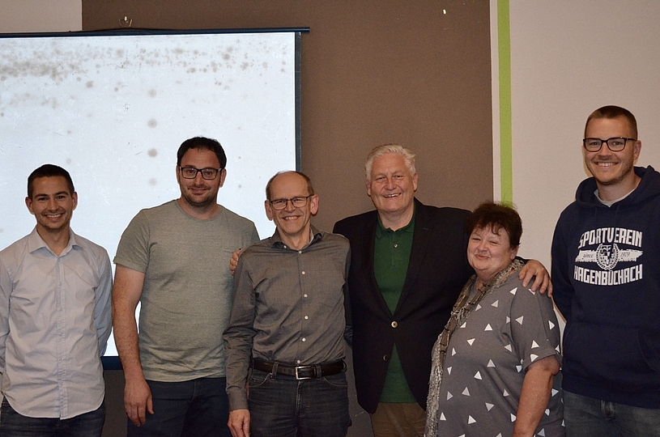
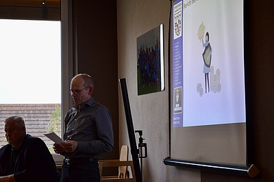
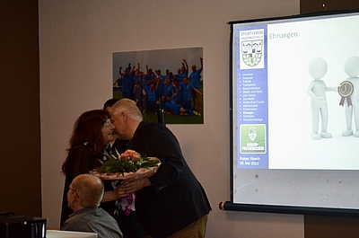

Jahreshauptversammlung des SV Hagenbüchach am 06. Mai 2022

Bericht des Vorstands
Der erste Vorstand Robert Rösch begrüßte die anwesenden Mitglieder und leitete die diesjährige Jahreshauptversammlung mit einem Resümee des vergangenen Jahres und der Entwicklung des Vereins ein.
Wie in allen Lebensbereichen, hatte auch im Sportverein das zweite Corona-Jahr großen Einfluss auf das Geschehen. Die Freude am Verein sei bei den Mitgliedern generell gesunken, meinte Rösch und das Ergebnis im Fußball mit dem Abstieg in die Kreisklasse hätte man sich selbstverständlich zu Beginn der Saison anders vorgestellt. Dennoch gab es gute Fortschritte in diversen Abteilungen und der Verein war im vergangenen Jahr wirtschaftlich sehr erfolgreich. Dies lag zum Großteil am Förderverein, der beim Bratwurstgrillen in Trübenbronn einen guten Betrag erwirtschaften konnte.
Zum Thema Finanzen erwähnte Robert Rösch noch die ausgesetzte Beitragserhöhung. Trotz steigender Kosten habe man sich aufgrund der aktuellen Lage und der Inflation für die Mitglieder des SVH entschieden, die aktuellen Beiträge beizubehalten (als Verein mit den niedrigsten Beiträgen in der Region!). Um die Qualität und das Angebot weiter erhalten zu können, wird eine Anpassung in den nächsten Jahren wohl unausweichlich sein.
Ein weiteres großes Thema war die Umrüstung des Flutlichts, welche bei der letzten Jahreshauptversammlung im August 2021 beschlossen wurde. Dabei erhält der Verein etwa 90% Förderungen und muss noch ca. 10% selbst stemmen. Einen Großteil davon können die Einnahmen des Fördervereins bereits decken. Nach einigen Verzögerungen steht das Vorhaben nun kurz vor der Vollendung.
Neben dem Flutlicht soll dieses Jahr auch in neue Tischtennisplatten investiert werden, da diese inzwischen etwas in die Jahre gekommen sind.
Erstmals in der Vereinsgeschichte sind im Jahr 2021 die Mitgliederzahlen gesunken. Dies lag teils an Corona, teils an der Fluktuation in der Fußballabteilung. Stand 06.05.2022 hat der Verein 687 Mitglieder. Die Teilnehmerzahl bei der Jahreshauptversammlung hatte man sich entsprechend höher erhofft, spiegelt allerdings das allgemeine Bild im Verein wieder, so Rösch. Auch beim Internetauftritt, der mittlerweile mit gut gepflegten Kanälen und regelmäßigen Aktualisierungen sehr gut läuft, wünscht man sich mehr Follower aus den eigenen Reihen. Erfreulich war, dass es 2022 47 Neuzugänge gab. Vielleicht lässt sich auch die Anzahl der Abonnenten auf Instagram und Co. noch etwas erhöhen.
Bericht Finanzen & Kassenprüfer
Den Einstiegsworten von Robert Rösch schlossen sich auch Christa Pfeiffer und Reiner Prell mit ihren Berichten über die Finanzen an. Trotz steigender Ausgaben wurde im Verein im Allgemeinen, aber auch in den Abteilungen im Speziellen verantwortungsvoll und gut gewirtschaftet.
Ebenso konnten durch Aktionen wie die Fußballferienschule oder das Bremserfest und natürlich den Verkauf im Hüttla zusätzliche Einnahmen generiert werden.
Ludwig Leykauf schloss zum Thema Kassenbericht: „Alles in Ordnung“.
Bericht der Abteilungen
Fußball : Erste und zweite Mannschaft
Günter Pfau berichtete anschließend über ein schwieriges Jahr im Fußball. Die Saison war geprägt von Corona, Verletzungen und unerwarteter Fluktuation.
Der Abstieg der 1. Mannschaft konnte nicht vermieden werden, somit hatte man das Ziel Klassenerhalt klar nicht erreicht. Die Probleme dafür lagen vermehrt in der Vorrunde. Während die Saison noch erwartungsvoll begann, folgte bald eine Serie an Niederlagen, die letztlich einen einvernehmlichen Trainerwechsel am Ende der Rückrunde zur Folge hatte. Der Nachfolger Armin Appelt, der krankheitsbedingt nicht an der JHV teilnehmen konnte, sah die Gründe vorrangig in der ausbaufähigen Kondition der Mannschaft und individuellen Fehlern. Dennoch gewann die Mannschaft nach dem Wechsel wieder etwas an Kontinuität. Der Trainer überzeugt durch Gewissenhaftigkeit und strebt den Wiederaufstieg an. Der Teamgedanke steht für ihn im Vordergrund, daher findet auch das Training der ersten und zweiten Mannschaft gemeinsam statt.
Das Regionalkonzept sah man klar als gescheitert an: Man hatte zu Beginn der letzten Saison lediglich auf Spieler aus der Region gesetzt. Spieler aus dem Nürnberger Raum, die den Verein verlassen hatten, konnten qualitativ allerdings nicht ersetzt werden.
Einige Spieler konnte man für die nächste Saison bereits überzeugen, zu bleiben. Zusätzlich soll die Mannschaft mit neuen Spielern aufgestockt werden, die zum Charakter des Teams passen und gleichzeitig neuen Schwung mitbringen.
Während die erste Mannschaft den Abstieg nicht verhindern konnte, kämpft die Zweite noch um den Klassenerhalt. In den letzten drei Heimspiele in der Saison, will man unbedingt wichtige Punkte zu Hause behalten.
Die Trainerwechsel der vergangenen Saison waren sicher nicht optimal für die Mannschaft. Zunächst hatte sich Stefan Weiskirchen aus beruflichen Gründen zurückgezogen. Anschließend kam Günter Pfau als Ersatz. Erst mit Armin Appelt kam wieder Kontinuität in die Trainertätigkeit, was sich auch an der Trainingsbeteiligung bemerkbar machte.
Die gute Stimmung in der Hagenbüchacher Reserve wurde immer wieder durch Verletzungspech und Corona getrübt. Zudem verlegten einige Spieler ihre Prioritäten weg vom Fußball. Die Probleme wurden bei einer internen Spielersitzung angesprochen und künftig sollen diese durch eine frühzeitige Kommunikation mit den Spielern vermieden werden.
Aushilfe für verletzte und fehlende Spieler kam immer wieder aus der Mannschaft der alten Herren.
Fußball: Alte Herren
Diese hatten laut Klaus Wentholt, der als Vertretung für Markus Förtner berichtete, den Trainingsbetrieb wieder aufgenommen, seit dies unter Corona Auflagen möglich war. Die Trainingsbeteiligung ist mit zehn bis 16 Mann jeden Mittwoch sehr konstant. Aktuell finden sich bei den alten Herren ca. 20-25 aktive und etwa 25 passive Mitglieder.
Seit Ende 2021 ist auch Spielbetrieb durch offizielle Meldung an den BFV seit zehn Jahren erstmals wieder möglich.
In diesem Zuge wurden zwei Trikotsätze angeschafft – somit ist die Mannschaft gut ausgestattet für anstehende Spiele. Einige Spieler konnten als Aushilfe in der zweiten Mannschaft wieder Spielpraxis gewinnen und hatten trotz besser erhoffter Ergebnisse viel Spaß.
Für 2022 sind neun Freundschaftsspiele geplant, die jeweils mittwochs anstatt des Trainings stattfinden sollen. Außerdem soll, wie auch im letzten Jahr, ein Kerwaspiel am Kerwafreitag gegen Langenzenn stattfinden. Während der Kirchweih will die Mannschaft auch einen Tag den Ausschank übernehmen. Zusätzlich laufen die Planungen für ein Weinfest im Herbst und einen Glühweinstand im Anschluss an die Weihnachtsparade der Feuerwehr am 23.12. Durch die Einnahmen vor allem die Jugend unterstützt werden.
Organisatorisch gab es folgende Wechsel: Spielleiter Werner „Waddle“ Weghorn und Kassier Christian During wurden im Frühjahr 2022 passive Mitglieder. Die Nachfolge als Spielleiter übernahm Markus Förtner.
Fußball: Jugend
Während man im Herrenbereich weniger zufrieden mit dem Verlauf der Saison war, berichtete Adrian Strauß in Vertretung für Stefan Weiskirchen von einer erfolgreichen Entwicklung im Jugendbereich. Die verschiedenen Jugenden konnten guten Zuwachs mit viel Potential verbuchen.
In der E-Jugend konnte man durch den Neuzugang im Trainerteam ein durchgängiges Training ermöglichen. Das Dreiergespann aus Helmut Ziegler , Klaus Wentholt und den neu hinzugekommenen Markus Laumann liegt dieses Jahr mit seinem Team im guten Mittelfeld und hat ein stabiles Team aufgebaut.
Hervorzuheben war der erstmalige Aufstieg der C-Jugend in die Kreisliga. Die Mannschaft unter der Leitung von Adrian Strauß, Norbert Mayer und Günter Elbinger belegt auch aktuell den ersten Tabellenplatz und wird als Belohnung einen Ausflug zum JFG Altmühltal mit dem Reisebus machen.
Die B-Jugend musste im Winter aufgrund von Spielermangel und Corona abgemeldet werden. Die restlichen Teammitglieder trainieren aktuell mit der A-Jugend und schlagen sich dort sehr gut.
Auch 2021 fand auf dem Gelände des SV Hagenbüchach wieder die BFV Fußballferienschule für Kinder aus der Umgebung statt. Organisiert wurde das erfolgreiche Event von Stefan Weiskirchen. Die Kinder hatten sehr viel Spaß und der Verein plant auch dieses Jahr wieder mit der Ferienveranstaltung. Helfende Hände können sich gerne jederzeit melden.
Großen Dank sprach Adrian Strauß an alle Jugendtrainer, Eltern, Betreuer und die BFV Ferien Fußballschule aus und meldete gleichzeitig die Suche nach weiteren Unterstützern, um den wichtigen Jugendbereich nach dem mühsamen Aufbau in den letzten Jahren weiterhin so gut zu erhalten.
Tischtennis
Die Tischtennis-Herren der ersten und zweiten Mannschaft spielten bedingt durch Corona 2021/2022 eine verkürzte Saison. Nach dem Abstieg beider Teams werden in der nächsten Saison die Bezirksklassen B und C aufgemischt.
Damit dies gut gelingt, nahmen fünf Mitglieder an einem dreitägigen Lehrgang im deutschen Tischtennis-Leistungszentrum in Düsseldorf teil. Außerdem waren zwei Teams beim SommerTeamCup des bayerischen Tischennisverbandes dabei, um wieder Spielpraxis zu bekommen.
Erfreut wurde berichtet, dass Michael Kruse nun Trainer mit C-Lizenz ist und seine Bezirks-Schiedsrichter-Lizenz verlängert hat. Zudem konnte die Abteilung mit aktuell 51 Mitgliedern einen leichten Zuwachs verbuchen. Für den Weg zurück in den Jugend-Ligabetrieb fehlt aktuell noch das Potenzial – möglicherweise kann man durch die Anschaffung neuer Tischtennisplatten weitere Jugendspieler begeistern.
Nachdem sowohl Kirchweih, als auch Weihnachtsfeier im letzten Jahr nicht stattfanden, war die Tischtennisabteilung lediglich beim Grilleinsatz in Trübenbronn, gemeinsam mit den Volleyballern vertreten.
Beachvolleyball
Die hagenbüchacher Beachvolleyballer waren glücklicherweise weniger durch Corona betroffen, da das Training ohnehin im Sommer und außen stattfand. Mit ca. 15 aktiven Spielern konnte man sowohl durchaus erfolgreich an Turnieren in Wilhermsdorf und Dürrnbuch teilnehmen, als auch den internen Hagenbüchachmeister herausspielen. Zuletzt wurde das Spielfeld Anfang Mai nach der Winterpause gemeinsam hergerichtet, um wieder mit dem Spielbetrieb starten zu können. Geplant ist die Durchführung eines größeren Beachvolleyballturniers. Helfende Hände und neue Spieler sind natürlich jederzeit gerne willkommen.
Shape your Body
Die Mädels- und Frauengruppe rund um Nina Wachtler trifft sich jeden Dienstag im VHS-Raum oder auf dem Kunstrasenfeld zum Training. Die Abteilung besteht seit Juni 2019 und Julia Richter wurde im letzten Winter durch die neue Trainerin Nina abgelöst, die nun die 8 bis 15-köpfige Truppe mit einer Kombination aus Kardio- und Krafttraining zum Schwitzen bringt. Die Übungen mit Kurzhanteln und dem eigenen Körpergewicht sollen in diesem Sommer noch durch kurze Laufeinheiten mit Kraftübungen ergänzt werden.
Line Dance
In Langenzenn steppte Ende April nicht nur der Bär, sondern auch unsere Line-Dance-Abteilung war bei Country-Musik im Kulturhof vertreten, um ihre Tanzchoreografie vorzuführen. Im Allgemeinen wird das Angebot sehr gut angenommen. Die Mittwochs-Trainings für Anfänger und Fortgeschrittene sind gut besucht. Mitte Juni möchte die Gruppe auf einem Line Dance Festival in Kaprun mit Weltrekordversuch „Höchstgelegener Country & Western Line Dance Workshop“ teilnehmen.
Gymnastik
Die kleine aber feine Gruppe an Frauen im Alter von 60+ trifft sich regelmäßig, um ihre Beweglichkeit zu erhalten. Aus Alters- und Krankheitsgründen kann nicht immer in voller Gruppenstärke gesportelt werden und so pendelt sich die Gruppengröße zwischen fünf und zehn Damen ein.
Mutter-Kind-Turnen
Sehr gut, fast schon zu gut besucht ist hingegen das Mutter-Kind-Turnen. Nachdem die Suche nach einer passenden Räumlichkeit etwas andauerte, findet das Training nun ein Mal wöchentlich in der Turnhalle Emskirchen statt. Durch mehr Platz und Gerätschaften haben die Kids nun noch mehr Spaß und werden spielerisch an den Sport herangeführt. Teilweise ist der Zulauf so enorm, dass nicht alle Interessenten teilnehmen können.
Männerballett
Die tanzbegeisterte Gruppe aus 17 Männern und vier Trainerinnen übte bis Anfang des Jahres für die eigentlich geplanten Auftritte, wie z.B. den Fasching in Hagenbüchach, die leider coronabedingt alle abgesagt wurden. Das Einstudieren der Choreografie soll schon bald wieder jeden Sonntagmorgen stattfinden. Möglicherweise können wir uns dann 2023 auf eine Show des Männerballetts freuen.
Bericht Förderverein
Mit den Einnahmen des Fördervereins sollen hauptsächlich die Jugendarbeit sowie die Pflege der Anlagen unterstützt werden. In diesem Jahr gab es lediglich eine Veranstaltung: das Bratwurstgrillen am Christbaumhof in Trübenbronn. Besonderer Dank geht an die fleißigen Helfer der Tischtennis- und Volleyballabteilung, sowie Günter und Adrian Strauß mit ihren Teams.
Ehrungen
Für 25 Jahre Mitgliedschaft wurden die anwesenden Siegfried Meier und Reiner Prell geehrt. Beate Niederecker bekam für ganze 40 Jahre Vereinstreue die Urkunde von Robert Rösch überreicht.
Die Jubilare Anke Richter (25 Jahre), Daniel Hußnätter (25 Jahre), Frank Hußnätter (25 Jahre), Heide und Johann Vogel (beide 40 Jahre), Hannelore Steinhoff (40 Jahre), Helga Schuh (40 Jahre) und David Schneider (40 Jahre) werden sich bald auf Besuch der Vorstandschaft zur persönlichen Überreichung der Urkunden freuen dürfen.
Abschluss
Sonstige Themen, sowie Wünsche und Anträge waren nicht eingegangen. Somit schloss der Vorstand mit dem Hinweis, dass man bei der nächsten Jahreshauptversammlung wieder in den alten Rhythmus zurückkehren wolle. Der Termin dürfte demnach im Februar 2023 stattfinden.
Bericht: Pia Wolf
Bilder: Leah Coker

